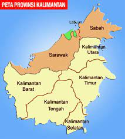

Tentang Pulau Kalimantan
Tentang pulau Kalimantan – Ini merupakan sebuah pulau di Indonesia yang belum banyak dijelajahi oleh wisatawan namun memiliki banyak keunikan dan daya tarik termasuk juga kaya dengan warisan budaya. Pulau Kalimantan terkenal dengan hutan tropis serta memiliki sumber daya alam yang terbanyak di Indonesia. Flora dan fauna eksotis juga ditawarkan oleh bumi Kalimantan.
Pada awal mulanya, pulau ini dihuni oleh orang-orang Dayak sebagai suku asli Kalimantan. Biasanya mereka tinggal di dalam hutan dan hidup secara nomaden. Namun saat ini perubahan dan arus modernisasi telah membawa beberapa masyarakat asli suku Dayak untuk bergaul dengan berbaur menjadi satu dengan masyarakat dari berbagai suku di perkotaan. Masyarakat Dayak tinggal di rumah panjang yang disebut Lamin atau Umat Daarul. Biasanya sebuah rumah dihuni oleh 50 orang atau lebih. Ada banyak suku Dayak serta sub suku yang tercatat di pulau Kalimantan.
Sungai memainkan peranan yang sangat penting dalam komunikasi dan ekonomi penduduknya. Sebagian besar masyarakat tinggal dan berpusat di sepanjang aliran sungai termasuk juga kegiatan mereka dan rumah rumah mereka. Kalimantan terbagi menjadi 4 provinsi yaitu Kalimantan Timur, Kalimantan Selatan, Kalimantan Tengah, dan juga Kalimantan Barat. Masing masing provinsi memiliki ciri khas, bahasa, potensi alam, budaya, dan keunikannya sendiri-sendiri
Beranda